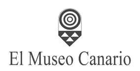
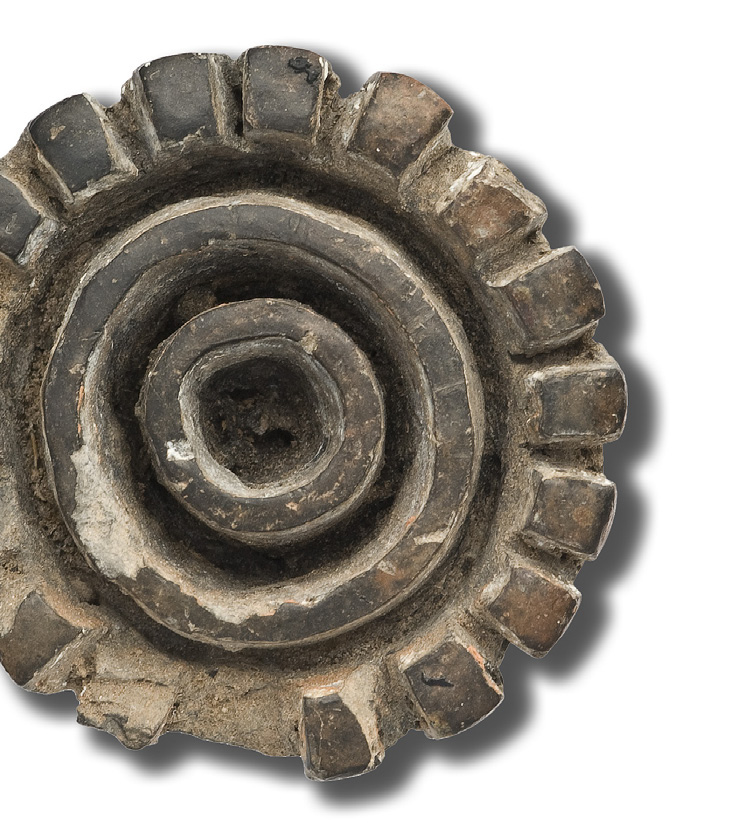
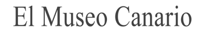
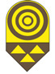

PreliminaresFront matter
M.ª del Carmen Cruz de Mercadal
Teresa Delgado Darias
Javier Velasco Vázquez


COORDINACIÓN DE LA EDICIÓN
El Museo Canario
TEXTOS
M.ª del Carmen Cruz de Mercadal
Teresa Delgado Darias
Javier Velasco Vázquez**
FOTOGRAFÍAS
Archivo de El Museo Canario
Antonio Betancor Rodríguez
Enrique Biscarri Trujillo
CORRECCIÓN DE TEXTOS
Luis Regueira Benítez*
DISEÑO Y MAQUETACIÓN
Enrique Biscarri Trujillo*
EDITA
El Museo Canario
© El Museo Canario, 2013
C/Dr. Verneau, 2
35001 Las Palmas de Gran Canaria
www.elmuseocanario.com
ISBN: 978-84-695-6874-3
Depósito Legal: GC 1184-2012
Edición en versión digital 2013
El Museo Canario
* Departamento de Ciencias Históricas, Universidad de Las Palmas de Gran Canaria
Pintaderas de el Museo Canario
Las Palmas de Gran Canaria 2013
M.ª del Carmen Cruz de Mercadal
Teresa Delgado Darias
Javier Velasco Vázquez


Índice
ÍNDICE GENERAL
-
- ACERCA DE ESTE CATÁLOGO — 12
- 1.1. La colección de pintaderas de El Museo Canario — 21
- 1.2. El contenido de este trabajo — 29
- 1.3. Búsquedas en el catálogo y ficha de pintaderas — 33
-
- ANÁLISIS TÉCNICO DE LAS PINTADERAS DE EL MUSEO CANARIO — 36
- 2.1. El objeto — 37
- 2.2. El proceso de elaboración — 45
- 2.3. Las técnicas decorativas — 50
- 2.3.1. Excisión — 50
- 2.3.2. Incisión — 52
- 2.3.3. Impresión — 54
- 2.4. La habilidad técnica — 58
- 2.5. Conclusiones — 59
-
- LA FORMACIÓN DE LA COLECCIÓN DE PINTADERAS DE EL MUSEO CANARIO — 61
- 3.1. Los orígenes de la colección de pintaderas — 62
- 3.1.1. Donaciones y compras — 65
- 3.1.2. El coleccionismo — 74
- 3.1.3. “Exploraciones” y rebuscas” — 79
- 3.1.4. Los intercambios — 84
- 3.2. Las décadas de 1920 y 1930 — 86
- 3.3. La colección de pintaderas durante el período de la comisaría de excavaciones arqueológicas — 92
- 3.4. Las pintaderas en el marco de los nuevos procedimientos de trabajo arqueológico — 100
- 3.5. Inventarios arqueológicos, intervenciones y hallazgos casuales entre finales del siglo XX y principios del XXI — 109
-
- APUNTES PARA UNA HISTORIA DE LA INVESTIGACIÓN SOBRE LAS PINTADERAS — 118
-
- SEÑALES DE UN PUEBLO — 139
- BIBLIOGRAFÍA — 149
- ANEXO — 169
- ANEXO FOTOGRÁFICO — 190
ÍNDICE DE FIGURAS EN ARTÍCULOS
- Fig. 1.1. Placa fotográfica realizada por Teodoro Maisch entre 1936-1940 (AMC-FFTM-prov1863)
- Fig. 1.2. Placa fotográfica realizada por Teodoro Maisch entre 1936-1940 (AMC-FFTM-prov1865)
- Fig. 1.3. Moldes de yeso empleados para realizar reproducciones de pintaderas
- Fig. 1.4. Pintadera 3171
- Fig. 1.5. Pintadera 3098
- Fig. 1.6. Pintadera 3089
- Fig. 2.1. Elementos constitutivos
- Fig. 2.2. Clasificación de las pintaderas
- Fig. 2.3. Estado de conservación
- Fig. 2.4. Porcentajes de reconstrucción
- Fig. 2.5. Tipos de perfil
- Fig. 2.6. Tipos de apéndice
- Fig. 2.7. Tipos de transición cuerpo-apéndice
- Fig. 2.8. Posiciones del útil empleado para la impresión
- Fig. 3.1. Fachada de El Museo Canario (AMC-CFH-000552 Curt Herrmann, ca. 1930)
- Fig. 3.2. Fragmento de un inventario de materiales arqueológicos de El Museo Canario anterior a marzo de 1881, en el que figuran las cuatro pintaderas procedentes de Tirajana (AMC/AMC 1211)
- Fig. 3.3. Recibo de 830 pesetas por la compra de materiales arqueológicos que El Museo Canario realiza a Miguel Padilla y Moreno en el año 1887 (AMC/AMC 12)
- Fig. 3.4. Fragmento de la carta remitida por V. Grau-Bassas desde La Plata (Argentina) el 4 de octubre de 1889 a Juan Padilla, informándole del envío a El Museo Canario de tres pintaderas (AMC/VGB VIII/25)
- Fig. 3.5. Portada del Reglamento conforme al cual habrán de llevarse a efecto las exploraciones y rebuscas que se acuerden por la Junta Directiva de El Museo Canario (1886), propuesto por G. Chil y Naranjo
- Fig. 3.6. Vitrinas de El Museo Canario dedicadas a la exposición de recipientes cerámicos (AMC-FFTM-000414, ca. 1935)
- Fig. 3.7. Vaciados en escayola de pintaderas procedentes de Cueva de Arene Candide (Savona, Liguria, Italia) (n.º de inventario 39977), Colombia (n.º de inventario 39978) y México (n.º de inventario 39982), elaborados y donados a El Museo Canario por Diego Ripoche y Torrens
- Fig. 3.8. Molde y vaciado de pintadera de Gran Canaria (n.º de inventario 3039)
- Fig. 3.9. Sebastián Jiménez Sánchez en el Cenobio de Valerón (Santa María de Guía, Gran Canaria) (AMC/SJS caja 71, cap. 7, doc. 1)
- Fig. 3.10. Poblado de La Solana del Pinillo (Tejeda)
- Fig. 3.11. Pintadera hallada en una casa de piedra del poblado Majada de Altabaca (Valle de Guayedra, Agaete) (n.º de inventario 3074)
- Fig. 3.12. Dibujo del poblado de Caserones (La Aldea de San Nicolás, Gran Canaria), realizado por Víctor Grau-Bassas a finales del siglo XIX (AMC/VGB)
- Fig. 3.13. Cueva de las Estrellas (Acusa, Artenara)
- Fig. 3.14. Mapa de Gran Canaria con indicación de procedencia de las pintaderas de barro cocido de El Museo Canario
- Fig. 4.1. Gregorio Chil y Naranjo en la sala de antropología física de El Museo Canario, cuando este se encontraba instalado en el Ayuntamiento de Las Palmas de Gran Canaria (AMC-FFLO-000234, ca. 1900)
- Fig. 4.2. René Verneau (AMC-FFTM-prov0852, ca. 1930)
- Fig. 4.3. José Pérez de Barradas (a la derecha) junto al comisario provincial de excavaciones arqueológicas, Sebastián Jiménez Sánchez, (a la izquierda) y al comisario general de excavaciones arqueológicas, Julio Martínez Santa-Olalla, (en el centro). Año 1941 (AMC/SJS caja 4, sobre 2)
- Fig. 4.4. Dominik J. Wölfel (AMC-CFH-NI1058, ca. 1945-1950)
- Fig. 4.5. Pintadera (n.º de inventario 3146) hallada en 1936 en un granero del conjunto arqueológico de Acusa (Artenara)
- Fig. 4.6. Luis Diego Cuscoy y Luis Pericot, inaugurando el “V Congreso Panafricano de Prehistoria y de Estudio del Cuaternario” (1963). Foto de José Naranjo (AMC/SJS, caja 4, sobre 3)
- Fig. 4.7. Miquel Tarradell (imagen izquierda) y Lionel Balout (imagen derecha) durante su estancia en Gran Canaria con ocasión del “Simposio Internacional conmemorativo del centenario del descubrimiento del primer hombre de Cro-Magnon”, celebrado entre los días 16 y 22 de febrero de 1969 (AMC-FFJN-s55n33 y n35, 1969)
- Fig. 4.8. Bolsa de cuero (n.º de inventario 2612) decorada con motivos geométricos realizados con almagre
- Fig. 5.1. Pintaderas que muestran la reiteración de esquemas compositivos
- Fig. 5.2. Detalle de un ídolo (n.º de inventario 2880) cuyos motivos decorativos y composición guardan estrechas similitudes con los representados en algunas pintaderas (n.º de inventario 3128 y 3118)
ÍNDICE DE TABLAS EN ANEXO
- Tabla 2.1. Formas geométricas asociadas a los cuerpos de las pintaderas
- Tabla 2.2. Tipos de sección de los apéndices
- Tabla 2.3. Motivos excisos
- Tabla 2.4. Pintaderas en las que está presente la excisión (60)
- Tabla 2.5. Motivos incisos
- Tabla 2.6. Pintaderas en las que sólo está presente la incisión (27)
- Tabla 2.7. Pintaderas en las que la impresión acompaña a una destacada técnica de incisión (33)
- Tabla 2.8. Pintaderas en las que la incisión y la impresión comparten protagonismo (4)
- Tabla 2.9. Pintaderas en las que la incisión sirve de guía a la impresión perpendicular y de apoyo a la impresión de sección angular o redondeada (27)
- Tabla 2.10. Pintaderas en las que la incisión duplica el motivo longitudinal generado mediante la técnica de la impresión (3)
- Tabla 2.11. Pintaderas en las que se asocian la incisión, la impresión y la excisión (6)
- Tabla 2.12. Pintaderas en las que la incisión guía y soporta a la impresión de sección angular o redondeada, asociándose ambas con la excisión (41)
- Tabla 2.13. Pintaderas en las que coexisten la incisión y la excisión (2)
- Tabla 2.14. Motivos impresos
- Tabla 2.15. Pintaderas en las que sólo está presente la impresión (61)
- Tabla 2.16. Pintaderas en las que conviven la impresión y la excisión (9)
ABREVIATURAS
- AMC/AMC: Archivo de El Museo Canario. Archivo General de El Museo Canario.
- AMC/AMC LAJDMC: Archivo de El Museo Canario. Archivo General de El Museo Canario. Libro de Actas de Juntas Directivas de El Museo Canario
- AMC-CFH: Archivo de El Museo Canario. Colección de Fotografía Histórica.
- AMC-FFJN: Archivo de El Museo Canario. Fondo Fotográfico José Naranjo.
- AMC-FFLO: Archivo de El Museo Canario. Fondo Fotográfico Luis Ojeda Pérez.
- AMC-FFTM: Archivo de El Museo Canario. Fondo Fotográfico Teodoro Maisch.
- AMC/SJS: Archivo de El Museo Canario. Colección documental Sebastián Jiménez Sánchez.
- AMC/VGB: Archivo de El Museo Canario. Colección Documental Víctor Grau-Bassas.
M.ª del Carmen Cruz de Mercadal
Teresa Delgado Darias
Javier Velasco Vázquez
EDITION COORDINATION
El Museo Canario
TEXTS
M.ª del Carmen Cruz de Mercadal
Teresa Delgado Darias
Javier Velasco Vázquez**
PHOTOGRAPHS
Archive of El Museo Canario
Antonio Betancor Rodríguez
Enrique Biscarri Trujillo
TEXT CORRECTION
Luis Regueira Benítez*
DESIGN AND LAYOUT
Enrique Biscarri Trujillo*
PUBLISHED BY
El Museo Canario
© El Museo Canario, 2013
C/Dr. Verneau, 2
35001 Las Palmas de Gran Canaria
www.elmuseocanario.com
ISBN: 978-84-695-6874-3
Legal Deposit: GC 1184-2012
Digital edition 2013
El Museo Canario
* Department of Historical Sciences, Universidad de Las Palmas de Gran Canaria
Pintaderas of El Museo Canario
Las Palmas de Gran Canaria 2013
M.ª del Carmen Cruz de Mercadal
Teresa Delgado Darias
Javier Velasco Vázquez
Contents
GENERAL CONTENTS
-
- ABOUT THIS CATALOGUE — 12
- 1.1. The collection of pintaderas of El Museo Canario — 21
- 1.2. The content of this work — 29
- 1.3. Searches in the catalogue and the pintadera record sheets — 33
-
- TECHNICAL ANALYSIS OF THE PINTADERAS OF EL MUSEO CANARIO — 36
- 2.1. The object — 37
- 2.2. The manufacturing process — 45
- 2.3. The decorative techniques — 50
- 2.3.1. Excision — 50
- 2.3.2. Incision — 52
- 2.3.3. Impression — 54
- 2.4. Technical skill — 58
- 2.5. Conclusions — 59
-
- THE FORMATION OF THE COLLECTION OF PINTADERAS OF EL MUSEO CANARIO — 61
- 3.1. The origins of the collection of pintaderas — 62
- 3.1.1. Donations and purchases — 65
- 3.1.2. Collecting — 74
- 3.1.3. “Explorations” and searches” — 79
- 3.1.4. Exchanges — 84
- 3.2. The decades of the 1920s and 1930s — 86
- 3.3. The collection of pintaderas during the period of the commissionership of archaeological excavations — 92
- 3.4. The pintaderas within the framework of the new procedures of archaeological work — 100
- 3.5. Archaeological inventories, interventions and casual finds between the late 20th century and the beginning of the 21st — 109
-
- NOTES TOWARDS A HISTORY OF RESEARCH ON THE PINTADERAS — 118
-
- SIGNS OF A PEOPLE — 139
- BIBLIOGRAPHY — 149
- APPENDIX — 169
- PHOTOGRAPHIC APPENDIX — 190
INDEX OF FIGURES IN THE ARTICLES
- Fig. 1.1. Photographic plate made by Teodoro Maisch between 1936 and 1940 (AMC-FFTM-prov1863)
- Fig. 1.2. Photographic plate made by Teodoro Maisch between 1936 and 1940 (AMC-FFTM-prov1865)
- Fig. 1.3. Plaster moulds used to make reproductions of pintaderas
- Fig. 1.4. Pintadera 3171
- Fig. 1.5. Pintadera 3098
- Fig. 1.6. Pintadera 3089
- Fig. 2.1. Constitutive elements
- Fig. 2.2. Classification of the pintaderas
- Fig. 2.3. State of preservation
- Fig. 2.4. Percentages of reconstruction
- Fig. 2.5. Types of profile
- Fig. 2.6. Types of appendage
- Fig. 2.7. Types of body-appendage transition
- Fig. 2.8. Positions of the tool used for impression
- Fig. 3.1. Façade of El Museo Canario (AMC-CFH-000552 Curt Herrmann, ca. 1930)
- Fig. 3.2. Fragment of an inventory of archaeological materials of El Museo Canario predating March 1881, in which the four pintaderas from Tirajana are listed (AMC/AMC 1211)
- Fig. 3.3. Receipt for 830 pesetas for the purchase of archaeological materials that El Museo Canario makes from Miguel Padilla y Moreno in the year 1887 (AMC/AMC 12)
- Fig. 3.4. Fragment of the letter sent by V. Grau-Bassas from La Plata (Argentina) on 4 October 1889 to Juan Padilla, informing him of the dispatch to El Museo Canario of three pintaderas (AMC/VGB VIII/25)
- Fig. 3.5. Frontispiece of the Reglamento conforme al cual habrán de llevarse a efecto las exploraciones y rebuscas que se acuerden por la Junta Directiva de El Museo Canario (1886), proposed by G. Chil y Naranjo
- Fig. 3.6. Display cases of El Museo Canario devoted to the exhibition of ceramic vessels (AMC-FFTM-000414, ca. 1935)
- Fig. 3.7. Plaster casts of pintaderas from Cueva de Arene Candide (Savona, Liguria, Italy) (inventory no. 39977), Colombia (inventory no. 39978) and Mexico (inventory no. 39982), made and donated to El Museo Canario by Diego Ripoche y Torrens
- Fig. 3.8. Mould and cast of a pintadera from Gran Canaria (inventory no. 3039)
- Fig. 3.9. Sebastián Jiménez Sánchez at the Cenobio de Valerón (Santa María de Guía, Gran Canaria) (AMC/SJS caja 71, cap. 7, doc. 1)
- Fig. 3.10. Settlement of La Solana del Pinillo (Tejeda)
- Fig. 3.11. Pintadera found in a stone house of the Majada de Altabaca settlement (Valle de Guayedra, Agaete) (inventory no. 3074)
- Fig. 3.12. Drawing of the settlement of Caserones (La Aldea de San Nicolás, Gran Canaria), made by Víctor Grau-Bassas in the late 19th century (AMC/VGB)
- Fig. 3.13. Cueva de las Estrellas (Acusa, Artenara)
- Fig. 3.14. Map of Gran Canaria indicating the provenance of the fired-clay pintaderas of El Museo Canario
- Fig. 4.1. Gregorio Chil y Naranjo in the physical anthropology room of El Museo Canario, when the latter was installed in the Ayuntamiento of Las Palmas de Gran Canaria (AMC-FFLO-000234, ca. 1900)
- Fig. 4.2. René Verneau (AMC-FFTM-prov0852, ca. 1930)
- Fig. 4.3. José Pérez de Barradas (on the right) together with the provincial commissioner of archaeological excavations, Sebastián Jiménez Sánchez, (on the left) and the Comisaría General de Excavaciones Arqueológicas commissioner, Julio Martínez Santa-Olalla, (in the centre). Year 1941 (AMC/SJS caja 4, sobre 2)
- Fig. 4.4. Dominik J. Wölfel (AMC-CFH-NI1058, ca. 1945-1950)
- Fig. 4.5. Pintadera (inventory no. 3146) found in 1936 in a granary of the archaeological complex of Acusa (Artenara)
- Fig. 4.6. Luis Diego Cuscoy and Luis Pericot, inaugurating the “V Congreso Panafricano de Prehistoria y de Estudio del Cuaternario” (1963). Photo by José Naranjo (AMC/SJS, caja 4, sobre 3)
- Fig. 4.7. Miquel Tarradell (left image) and Lionel Balout (right image) during their stay in Gran Canaria on the occasion of the “Simposio Internacional conmemorativo del centenario del descubrimiento del primer hombre de Cro-Magnon”, held between 16 and 22 February 1969 (AMC-FFJN-s55n33 and n35, 1969)
- Fig. 4.8. Leather bag (inventory no. 2612) decorated with geometric motifs made with red ochre (almagre)
- Fig. 5.1. Pintaderas showing the reiteration of compositional schemes
- Fig. 5.2. Detail of an idol (inventory no. 2880) whose decorative motifs and composition bear close similarities to those represented on some pintaderas (inventory nos. 3128 and 3118)
INDEX OF TABLES IN THE APPENDIX
- Table 2.1. Geometric shapes associated with the bodies of the pintaderas
- Table 2.2. Types of section of the appendages
- Table 2.3. Excised motifs
- Table 2.4. Pintaderas in which excision is present (60)
- Table 2.5. Incised motifs
- Table 2.6. Pintaderas in which incision alone is present (27)
- Table 2.7. Pintaderas in which impression accompanies a prominent incision technique (33)
- Table 2.8. Pintaderas in which incision and impression share the leading role (4)
- Table 2.9. Pintaderas in which incision serves as a guide for perpendicular impression and as support for impression of angular or rounded section (27)
- Table 2.10. Pintaderas in which incision duplicates the longitudinal motif generated by the technique of impression (3)
- Table 2.11. Pintaderas in which incision, impression and excision are combined (6)
- Table 2.12. Pintaderas in which incision guides and supports impression of angular or rounded section, both being combined with excision (41)
- Table 2.13. Pintaderas in which incision and excision coexist (2)
- Table 2.14. Impressed motifs
- Table 2.15. Pintaderas in which impression alone is present (61)
- Table 2.16. Pintaderas in which impression and excision coexist (9)
ABBREVIATIONS
- AMC/AMC: Archive of El Museo Canario. Archivo General de El Museo Canario.
- AMC/AMC LAJDMC: Archive of El Museo Canario. Archivo General de El Museo Canario. Libro de Actas de Juntas Directivas de El Museo Canario
- AMC-CFH: Archive of El Museo Canario. Colección de Fotografía Histórica.
- AMC-FFJN: Archive of El Museo Canario. Fondo Fotográfico José Naranjo.
- AMC-FFLO: Archive of El Museo Canario. Fondo Fotográfico Luis Ojeda Pérez.
- AMC-FFTM: Archive of El Museo Canario. Fondo Fotográfico Teodoro Maisch.
- AMC/SJS: Archive of El Museo Canario. Colección documental Sebastián Jiménez Sánchez.
- AMC/VGB: Archive of El Museo Canario. Colección Documental Víctor Grau-Bassas.